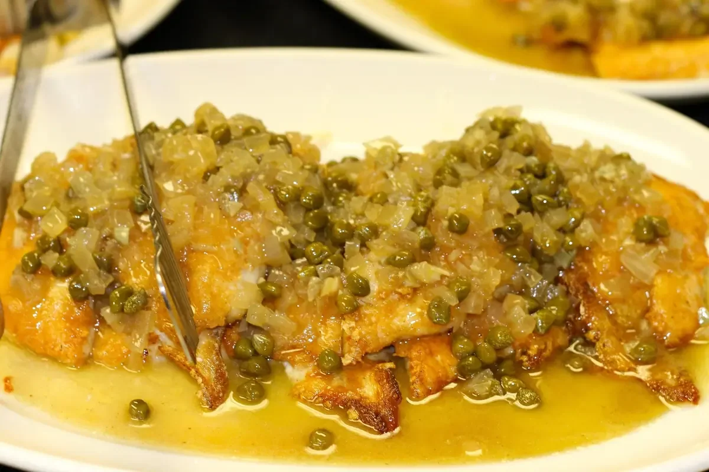
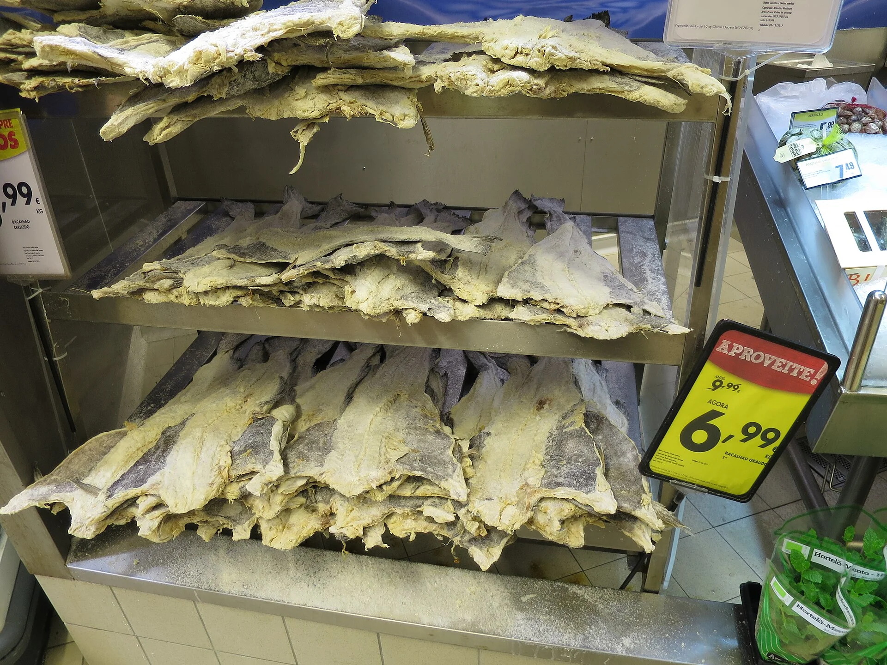
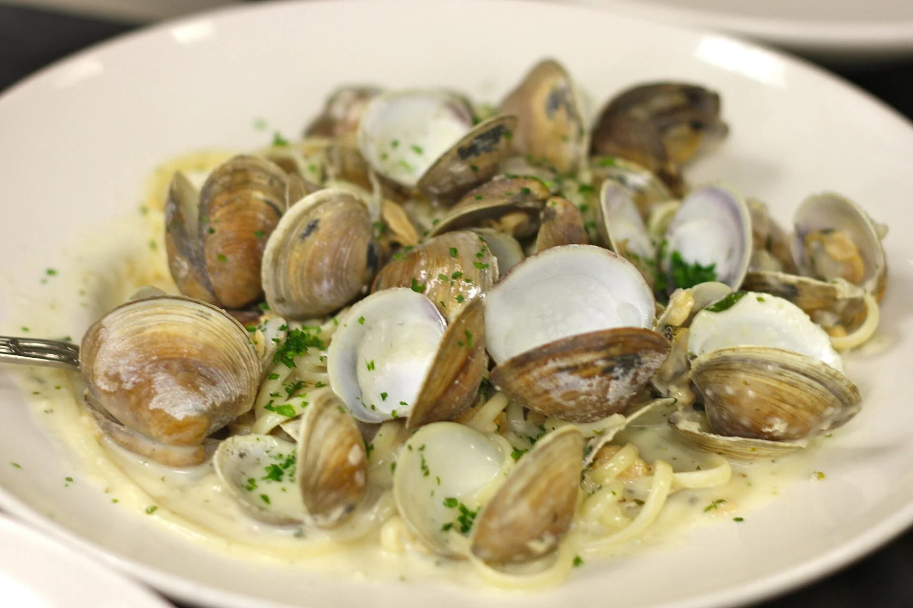
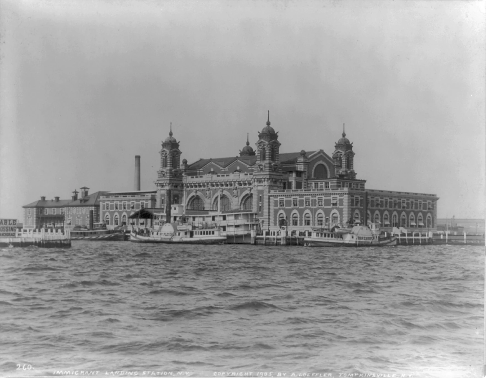

아직 펼치지 않은 카드성탄 밤의 식탁 · 1일곱 가지 생선 만찬성탄 전날 밤, 이탈리아계 미국인 가정은 생선 요리를 일곱 가지나 차려요. 왜 하필 고기가 아니라 생선일까요?성탄 전날 밤에 생선 요리를 일곱 가지나 먹는대!
1891년 성탄 무렵이탈리아 나폴리 → 미국 뉴욕 · 필라델피아
일곱 가지 생선 만찬
성탄 전날 밤, 고기 대신 바다를 차리던 도시 나폴리. 1891년 성탄을 앞둔 장어 장터 판화 속을 하나씩 찾아보세요. 그다음 그 상차림이 바다를 건너 새 이름을 얻은 길을 따라가 봐요.
옛날 나폴리에서는 성탄 전날 밤에 고기 대신 생선을 먹었대. 장어 파는 장터 그림 속에 숨은 것들을 찾아볼까?
검수 전 시안이에요(기준서 1판). 장면에는 기록과 그림에 있는 것만 옮겼어요. 성탄 전야 차림은 카발칸티의 요리책을, 이민은 미국 의회도서관과 국립공원청 자료를 따랐어요. 상상은 ‘눈 감고 상상해 보기’에만 썼어요. 지도 위 길의 종이 지도는 이 안내서가 그렸어요.
시안 확인용카드 단계 미리 보기
1
요리책 속 성탄 전야
이탈리아 남쪽 바닷가 도시 나폴리. 가톨릭 신자들은 성탄 전날 고기를 먹지 않고 성탄을 기다렸어요. 이 밤을 ‘비질리아’(La Vigilia), 곧 성탄 전야라고 불러요.
나폴리의 공작이자 요리책 저자 이폴리토 카발칸티(Ippolito Cavalcanti, 1787~1859)는 자기 요리책에 나폴리 사투리로 성탄 전야 차림을 적어 두었어요.

“소금 멸치로 볶은 브로콜리, 빵가루를 뿌린 가는 국수, 튀긴 장어, 레몬즙과 기름 소스를 곁들인 삶은 바닷가재, 작은 오징어와 갑오징어 냄비 요리, 생선 파이, 구운 카피토네, 그리고 설탕을 뿌린 튀김 과자 스트루폴리.”
이폴리토 카발칸티, 『이론과 실제의 요리』의 나폴리 사투리 부분, 성탄 전야 차림 · 이 안내서가 우리말로 옮김
차림 어디에도 고기는 없어요. 그 대신 장어가 두 번 나와요. 튀긴 장어, 그리고 구운 카피토네(capitone)예요.
옛날 나폴리 요리책에 성탄 전날 밤 차림이 적혀 있어. 고기는 하나도 없고, 생선이랑 바닷가재랑 장어가 나와!
물어보기이 차림에서 가장 먹어 보고 싶은 건 뭐야?
2
소금에 절인 대구, 바칼라
바칼라(baccalà)는 대서양의 대구를 소금에 절여 말린 거예요. 말린 대구를 먹는 풍습은 노르웨이와 아이슬란드, 뉴펀들랜드 같은 북쪽 바다에서 시작됐어요.
소금에 단단히 절였기 때문에, 요리하기 전에 1~3일 동안 찬물에 담그고 하루 두세 번 물을 갈아 소금기를 빼요. 성탄 전야 상은 며칠 전부터 차리기 시작하는 셈이에요.

미국의 이탈리아계 가정에서도 바칼라는 성탄 전야 상의 단골 요리예요.
바칼라는 소금에 꽁꽁 절인 대구야. 먹기 전에 며칠 동안 물에 담가 짠맛을 빼야 해.
물어보기며칠 동안 물에 담가 둔 생선은 만져 보면 어떤 느낌일까?
3
1891년, 장어 장터
1891년 성탄을 앞둔 나폴리 장터를 담은 목판화(나무판에 새겨 찍은 그림)예요. 제목은 「나폴리의 성탄 — 카피토네 팔기」예요.
카피토네는 크고 살진 암컷 장어예요. 1미터 가까이 자라기도 해요. 판화 속 작은 것들을 하나씩 눌러 찾아보세요.
판화 속 작은 것들을 하나씩 눌러 찾아보세요.

젠나로 다마토 그림, 「나폴리의 성탄 — 카피토네 팔기」, 1891년 목판화 · 그림: 젠나로 다마토(Gennaro D’Amato) · 퍼블릭 도메인 · 위키미디어 공용
그림 위의 숫자나 아래 번호를 눌러 보세요.
다 찾았어요. 1891년 나폴리, 성탄 전야 상에 오를 바다가 이 장터에 다 모였어요.
유럽 장어는 대서양 건너 사르가소해에서 태어나, 1만 킬로미터 가까이 헤엄쳐 지중해와 유럽의 강으로 와요. 지금은 국제자연보전연맹(IUCN)이 ‘위급’으로 분류한 멸종 위기종이에요.
장어 파는 장터야! 그림 속에 숨은 것들을 하나씩 찾아볼까?
물어보기이 장터에서는 어떤 소리가 들릴 것 같아?
4
바다를 건넌 상차림
1880년부터 1920년까지 400만 명이 넘는 이탈리아 사람이 미국으로 건너갔어요. 대부분 남부 이탈리아와 시칠리아의 가난한 농촌 사람들이었어요.
많은 사람이 뉴욕 앞바다의 작은 섬, 엘리스섬에서 미국 땅에 첫발을 디뎠어요.
‘다음 곳으로’를 눌러, 나폴리를 떠난 배를 따라 바다를 건너 보세요.
나폴리뉴욕 엘리스섬필라델피아
지도는 이 안내서가 그린 길잡이 그림이에요(실제 거리와 다를 수 있어요).
나폴리의 성탄 전야 상이 바다를 건너, 미국에서 새 이름을 얻었어요.
성탄 전날 밤 생선으로 상을 차리던 풍습도 사람들과 함께 바다를 건넜어요.
아주 많은 사람이 배를 타고 바다 건너 미국으로 갔어. 성탄 전날 생선 먹는 풍습도 같이 갔대.
물어보기배를 타고 큰 바다를 며칠씩 건너면 어떤 기분일까?
5
미국에서 얻은 이름
이탈리아에서는 이 저녁을 그냥 ‘비질리아’라고 불렀어요. ‘일곱 가지 생선 만찬’이라는 이름은 미국의 이탈리아계 사람들 사이에서 생겼어요.
이 이름이 인쇄된 가장 이른 기록은 1980년대 필라델피아의 신문이에요. 뉴욕 타임스에는 1987년에야 처음 나와요.

어떤 일곱 가지를 올리는지는 집집마다 달라요. 홀수가 행운을 준다며 셋, 열하나, 열세 가지를 차리는 집도 있어요.
‘일곱 가지 생선 만찬’이라는 이름은 미국에서 생겼대. 세 가지나 열세 가지를 차리는 집도 있어.
물어보기우리 집에서 생선 잔치를 한다면 몇 가지를 차릴까?
눈 감고 상상해 보기
12월 23일 밤, 나폴리의 좁은 골목. 생선 가게 등불 아래 사람들이 줄을 서요. 함지 속 장어가 물을 튀기고, 장수의 외침이 돌담에 부딪혀 울려요. 짭조름한 바다 냄새, 내일 저녁 부엌에서 들릴 기름 튀는 소리. 고기 대신, 내일 밤 식탁에는 바다가 올라와요.
눈을 감아 봐. 깜깜한 골목에 생선 가게 불빛이 반짝여. 장어가 첨벙첨벙! 아저씨가 “장어 사세요!” 하고 외쳐. 내일 밤엔 바다 잔치야!
나의 자리
고향을 떠난 사람에게 ‘그 맛’은 무엇을 지켜 주는 걸까요? 나에게도 그런 음식이 있나요?
멀리 이사 가도 꼭 먹고 싶은 우리 집 음식은 뭐야?
마음에 닿는 한 줄을 고르거나 직접 써 보세요. 한 줄을 남기면 이 자리의 도장이 찍혀요. 이 기기에만 저장돼요.
더 깊이
궁금한 칸만 펼쳐 읽어도 괜찮아요.
알고 보면

비질리아 이탈리아에서는 성탄 전날 밤을 ‘라 비질리아 디 나탈레’, 곧 성탄 전야라고 불러요. 가톨릭 신자들은 이날 고기를 먹지 않아야 했어요.
카피토네와 부라텔로 같은 유럽 장어라도 크고 살진 암컷을 카피토네라고 불러요. 1미터 가까이, 3킬로그램이 넘게 자라요. 수컷(부라텔로)은 50센티미터, 200그램을 넘지 않아요.
엘리스섬 뉴욕 항구 앞의 작은 섬이에요. 1892년부터 1924년까지 미국에서 가장 크고 바쁜 이민 검사소였어요. 사진은 1905년 2월의 엘리스섬이에요.
카발칸티 이폴리토 카발칸티의 요리책은 19세기 이탈리아에서 가장 널리 읽힌 요리책 가운데 하나였어요. 그가 세상을 떠날 때까지 나폴리에서 여덟 번 찍었어요.
기록마다 다른 점
1837년일까, 1839년일까 카발칸티의 성탄 전야 차림은 흔히 ‘1837년 책’에 있다고 소개돼요. 하지만 1837년 첫판은 남아 있는 책이 없고, 나폴리 사투리로 쓴 집밥 부분은 1839년 둘째 판에 더해졌다고 해요(옥스퍼드 음식 백과).
이름이 처음 보인 때 브리태니커는 ‘일곱 가지 생선 만찬’이라는 이름이 1980년대 필라델피아 신문에 처음 인쇄됐다고 적어요. 뉴욕 타임스에는 1987년에 처음 나와요.
왜 일곱일까 정해진 답은 없어요. 홀수를 행운으로 여겨 셋, 열하나, 열세 가지를 차리는 집도 있고, 어떤 일곱 가지인지도 집집마다 달라요.
직접 가 보기
확인한 날 · 2026년 11월 18일 · 바뀌기 쉬운 정보라 정기적으로 다시 확인해요
엘리스섬의 옛 이민 검사소 건물은 지금 박물관이에요. 100여 년 전 이민자들처럼 오늘도 배를 타고 들어가요. 여는 때와 배편은 미리 확인해 주세요.
나폴리에서는 지금도 12월 23일 저녁이면, 성탄 전야 상에 올릴 생선을 사려는 사람들로 생선 가게들이 자정 가까이 문을 연다고 해요.
장터를 다 둘러보기 금박
판화 속 여섯 곳을 모두 찾아 읽으면 카드에 금박이 입혀져요.
판화 속 여섯 곳을 모두 찾아 읽기
바다를 건너기 채색
둘 가운데 하나만 해도 카드가 채색돼요.
나폴리에서 필라델피아까지 길을 끝까지 따라가기
아이와 함께 ‘영화처럼 보기’를 끝까지 보기
근거 보기 (13)
- 레 시레누세 저널, 「나폴리의 성탄 음식」(2022.12.18) — 카발칸티의 성탄 전야 차림(사투리 원문), 카피토네는 암컷 장어, 12월 23일 밤의 생선 가게
- 옥스퍼드 음식 백과(앨런 데이비드슨) ‘카발칸티’ 항목 — 1787~1859, 1837년 첫판(남은 책 없음), 1839년 둘째 판에 사투리 부분, 여덟 판
- 브리태니커 「Feast of the Seven Fishes」 — 성탄 전야의 금육, 남부 이탈리아, 1980년대 필라델피아 신문, 홀수 차림, 바칼라
- 덴버 공공도서관 블로그, 「What’s the Meaning of The Feast of Seven Fishes?」(2015.12.15) — 뉴욕 타임스 첫 언급 1987년, 일곱 가지는 집집마다 다름
- 마이퍼스널트레이너(이탈리아) 「바칼라」 — 대서양 대구를 소금에 절임, 북쪽 바다에서 시작, 1~3일 물에 담가 소금기 빼기
- 지오팝, 「장어와 카피토네의 차이」(2025.12.23) — 큰 암컷 장어, 크기, 사르가소해에서 1만 km, IUCN 위급
- We the Italians(2020.12.20) — 카피토네는 크고 긴 암컷, 작은 쪽은 수컷
- 이탈리아 문화부 문화유산 목록: 젠나로 아마토(다마토) — 나폴리 1857 ~ 피에베 리구레 1947
- 위키미디어 공용: 「나폴리의 성탄 — 카피토네 팔기」 파일 정보(1891, 『릴루스트라치오네 포폴라레』)
- 미국 의회도서관 「The Great Arrival」 — 1920년까지 400만 명 넘게, 남부·시칠리아 농촌, 엘리스섬에서 첫발
- 미국 국립공원청: 엘리스섬 역사 — 1892~1924년, 1,200만 명
- 미국 국립공원청: 엘리스섬 — 오늘도 배로 들어가는 박물관
- GermanRoots: 「Italians to America」 색인 안내 — 나폴리를 떠나 뉴욕에 닿은 배들(1897~1898)
그림·사진·소리 출처
‘처음 만나는 기독교 문화’의 깊은 카드예요. 카드 단계와 남긴 글은 이 기기에만 저장돼요.